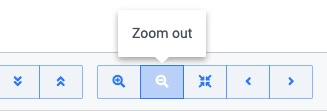

Automatic Scheduling
Maintaining project integrity
Connect your tasks, then drag drop to move entire task chains in one simple movement.

Use sorting and filtering to quickly find the tasks that matter.
Supports constraints, dependencies, baselines, critical path, rollups and more
Edit and create tasks inline in the gantt chart or in the task editor popup.
Select and edit tasks from multiple projects in one view.
Bryntum Gantt is a full featured Gantt chart for project management with support for all the features you need like dependencies, filtering, critical path and much more.
Connect your tasks, then drag drop to move entire task chains in one simple movement.